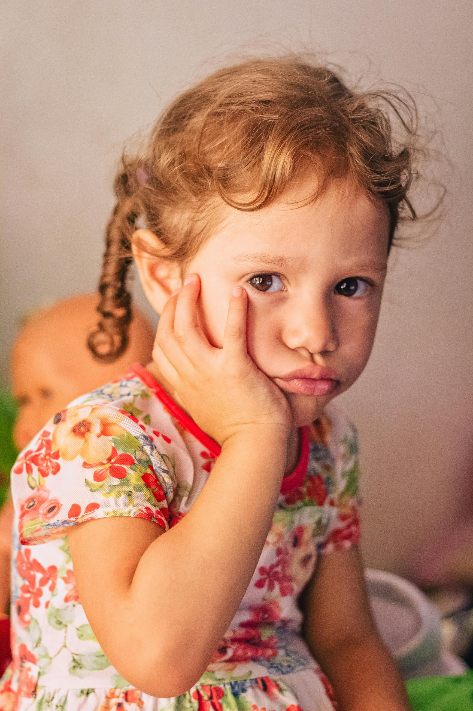
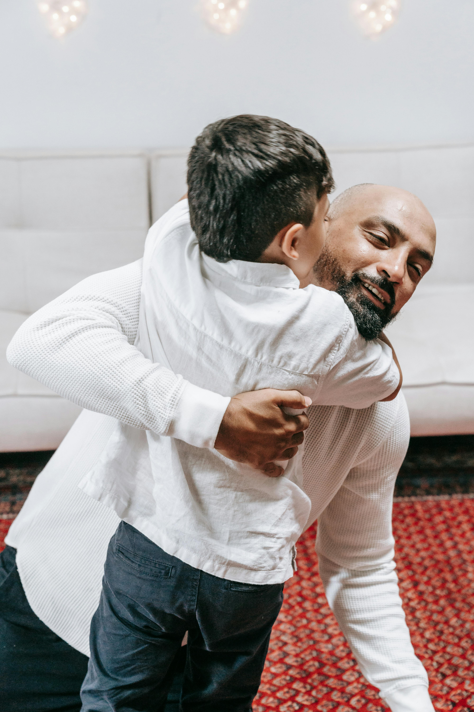

A hands-free defense system for the guy whose
name is on the t-shirt.
Your kid asks. The glasses whisper three good plays. Dad looks like
he had it the whole time. Field-tested on actual children.
Built for Even G2 · no camera, no speaker, no excuse.
[0:00–0:25 · Land the joke in the subtitle. The "name on the t-shirt" line is the whole pitch in ten words. Pause after "field-tested on actual children" — it gets a laugh.]
The problem
Your kid is an auditor. You’re the witness.

Preschoolers fire off hundreds of questions a day.
Most are innocent. Some are traps. A few are tests.
Dads have spent generations inventing deflections. We’ve
gotten good at it. We’ve also gotten predictable —
and our kids noticed.
the classic defenses
Go ask your mom. — strategic retreat
Because that’s how it works. — cosmic authority
Well, why do you think so? — the redirect
Google it, kid. — the surrender
When you’re older. — time dilation
Every bail-out costs a little bit of the dad mystique. We propose
a better way to hold the line.
[0:25–1:05 · Read the quotes in dad-voice. Land the "a little bit of the dad mystique" line. This is where the audience decides you're the real deal.]
The product
One screen. Three plays. No hands.
Kid asks a question out loud. Dad double-taps the glasses.
Two seconds later, three options float on the lens. Dad picks one
in his head and says it out loud. Looks like his own genius.
o "Why is the moon out in the daytime?"
D: The moon’s orbit places it above us by day too.
O: And by what metric does day exclude the moon?
E: The moon moonlights as a giant sleeping pigeon.
hands-free · read-and-speak~2 second first paintno phone involved
defensiveAnswer the question. Accurately. With flair.Tweed-jacket voice. A real word the kid might not know, used correctly. No hedging, no “I don’t know.”
offensiveVolley a question back.Slyly sarcastic. Challenges an assumption the kid didn’t know they were making. Never a softball — this one’s supposed to make them think.
escapeBreak the chain with a laugh.Giddy, obviously absurd. The only field allowed to confabulate — because nobody’s going to mistake a sleeping pigeon for the truth.
[1:05–1:50 · Point at each D/O/E row as you describe it. The pigeon line always lands — let it breathe.]
How it actually plays out
Same kid. Same glasses. Three different days.
Tuesday · the trap
“Why do dogs lick themselves?”
D: Grooming. Saliva contains mild
antimicrobial enzymes.
O: Have you surveyed the dog for
alternatives?
E: Dogs are tiny audiophiles tuning
themselves to middle C.
Wednesday · the classic
“Why is the sky blue?”
D: Air scatters short blue wavelengths
more than long red ones.
O: What color, then, should it be?
Defend your proposal.
E: The sky is a rejected flavor of
cotton candy. Respect it.
Thursday · the brutal one
“Why can’t I have dessert for breakfast?”
D: Metabolic pacing matters more
than the clock. Protein first.
O: Define “dessert.” Define
“breakfast.” Defend both.
E: Dessert is a ceremonial food
known only to raccoons.
Three ways to stay in charge. Dad picks the one that fits the mood —
and the kid walks away thinking he’s a genius.
[1:50–2:50 · Read the triads in dad-voice. The raccoons are a gift. Pause for laughter on Thursday.]
The rules
The Dad Code.
Four rules baked into the prompt. Nonnegotiable.
01
Never say “I don’t know.” Not ever.
If no honest answer exists, the Defensive slot quietly becomes
another counter-question. Dad doesn’t not-know things.
02
Never invent facts in Defensive or Offensive. Real
science only. Confident and correct. Not confident-and-making-it-up.
03
Never attack the child. Dry wit is fine. Cruelty
is not. Sarcasm aimed at ideas, never at people.
04
Safety overrides everything. Medical, danger,
grief — the academic voice and the goofy Escape both disappear.
Three warm, direct, honest answers in their place.
Pride is a game. Kids aren’t.
[2:50–3:40 · Read them clean, no jokes. Law 4 is the one that earns trust from the whole room.]
Why this only works on G2
The constraints are the feature.
no cameraNobody asked for a lens pointed at their kid. Privacy isn’t an afterthought — it’s baked into the hardware.
no speakerDad stays the voice in the room. Tech doesn’t narrate the conversation — it prompts the one human having it.
hands-freeNo phone to fish out. No screen to glance at. Double-tap, read, speak. Eyes stay on the kid.
quiet techTake the glasses off — the mic closes. Put them on — it’s waiting. Designed to help, not dominate.
kid asks→G2 mic→three options on the lens
Everything between those arrows is boring. What you see is the product.
[3:40–4:25 · The four cards are a love letter to Even's design choices without being a commercial. Let the "constraints are the feature" line breathe.]

What’s next
Not school on glasses.
A confidence multiplier for the guy holding the spatula.
it remembersEvery question auto-saves. The app learns your kid — interests, reading level, the stuff they keep asking. Next triad lands a little sharper.
it generalizesUncleKnowsEVERYTHING.GrandpaKnowsEVERYTHING.BigBrotherKnowsEVERYTHING. Same three plays, different persona.
it respects everyoneLocal-first memory. Never ad-targeted. Never training data. Kids stay kids; dads keep their mystique.